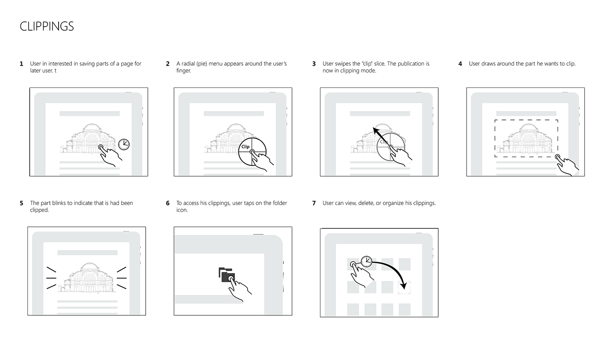
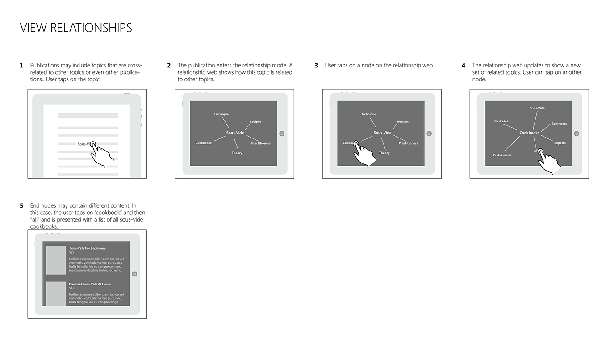
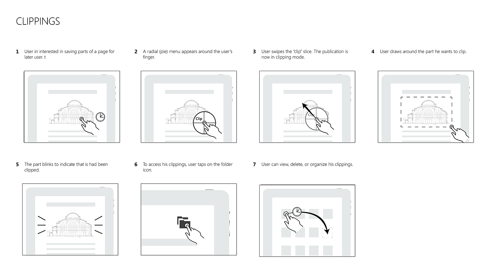
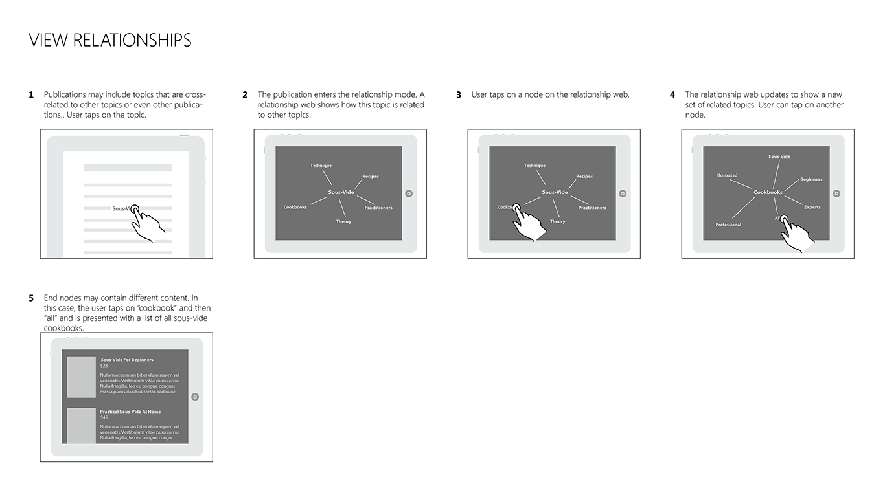
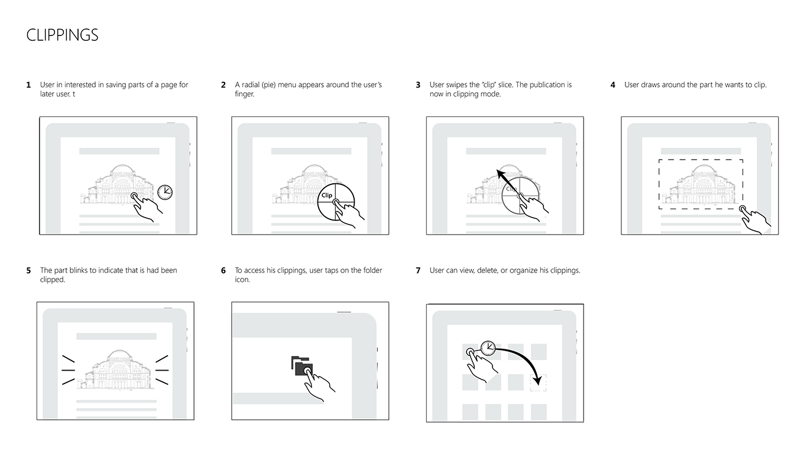
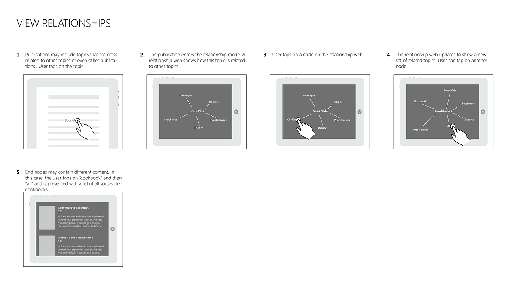

Storyboards
A sampling of storyboards of the user's experience interacting with atomic pieces.
 



Prior to the release of Windows 8, Cypress Consulting was invited by Microsoft to explore the potential of applying adaptive design techniques onto digital publications.
Ideation, Storyboarding
eReaders have become increasingly common as digital publications gain popularity in recent years. Most were first available as hardware reader then as apps for mobile/desktop devices. Recently, some have become available as multi-platform HTML5 web apps. Most digital publications, however, remain fairly similar to their print counterparts. Careful application modern web technologies may be what is needed to break away from the archaic constraints of print publications.
The following are two aspirational reading scenarios. The first explores how a digital guide book could accompany a publication before, during, and after a trip to the museum. The second explores how another publication could benefit a student as he completes his coursework.
Nina is a freshman at the University of Washington who have just completed a coursework on the history of architecture. She is interested in Byzantine architecture and have decided to spend her summer vacation in Istambul to experience the buildings in real life. In preparation for her trip, Nina scoured her local library for materials related to the Byzantine era. Although there are many books on the subject, Nina found them to be “flat” and “dated.”
While searching online for information about the Hagia Sophia, Nina discovered an interactive book that promises a guided before-, during-, and after-visit experience to the museum.
Before the trip, Nina learns the ins and outs of Hagia Sophia and takes notes of any points-of-interests that she would like to see at the museum.Johann is a university student majoring in English. As part of his coursework, he is required to read and analyze various forms of literature. Instead of carrying physical copies, Johan decided to explore the idea of keeping a digital collection of works.
Johann’s digital collection allows him to keep all his course materials in a centralized location accessible via all his internet-enabled devices. It not only provides a superior reading experience, it has additional utilities that helps Johann complete his coursework.
The digital collection allows Johann to keep all his course materials in a centralized location acessible via phone, tablet, and desktop.A sampling of storyboards of the user's experience interacting with atomic pieces.


Although this project did not end up being developed into a product, it was a personally very enjoyable one as it allowed me to use skills I do not get to often use. Being an early adopter of the Kindle and an avid reader, it was an exciting project for me to take as it allowed me to paint a picture of my ideal reading experience.